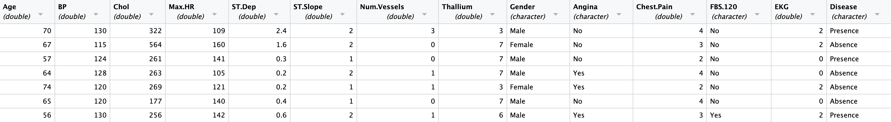

1 Introduction
1.1 The 30,000-Foot View
Statistical learning, which in brief is about learning how the data we observe are generated, is a fundamental aspect of data science and artificial intelligence. Which sounds good…but before continuing we should actually try to define these terms.
What is Artificial Intelligence?
There is no unique definition, but we like to say that
- AI is an idea. It is the simulation of intelligent behavior by computers.
So, then,
What is Data Science?
- Data science is what provides the tools and algorithms to implement AI ideas.
Thus in our view, statistics, all of it (including classic techniques like linear regression!), lies within AI as a whole, because to, e.g., automate a task, we might have to model it in the face of random variation.

But this last picture does not explicitly show “data science.” So we will show another picture that shows how statistics lies within data science as a whole.

Data science is where computer science, mathematics and statistics, and domain expertise meet. One can be a competent programmer, but that does not make one a data scientist; one may know probability theory, but that does not make one a data scientist; and one can be an expert in a domain like psychology, but that does not make one a data scientist. Effective data science requires the blending of knowledge in all three areas!
In particular, this book is meant to help you learn (so to speak) how to code up statistical analyses using the programming language R. (The domain knowledge? That’s up to you, the reader.) We do not assume previous familiarity with R; those without it may wish to work through the materials on this web site before moving to Chapter 2.
1.2 Data
Data take many forms, as shown below: they can be numbers, but they can also be images, or audio files, or text, etc. (Yes: we view “data” as the plural form of the singular “datum.”)

Data that are not in the form an array or a table (or what we will call a “data frame”) are dubbed unstructured data. In statistics, we generally cannot work directly with unstructured data, and so we utilize methods of data pre-processing (or “data wrangling”) to transform these data so as to be structured data. (Data wrangling is a broad topic that we will not cover in this book. The interested reader may wish to look at TBD - REF.)
The following shows structured data encapsulated within a data frame:

In a data frame,
- every row represents an object of study (in the example, a patient); and
- every column represents a measurement made for that patient (in the example, age, blood pressure, cholesterol, etc.)
The number of rows is the sample size, conventionally denoted \(n\).
We see that our structured data exhibit different types.
- some data are quantitative and (effectively) continuous (e.g.,
CostandAge), while - some are quantitative and discrete (e.g.,
Interventions), while - some are categorical or factors (e.g.,
Gender).
Sometimes, it takes a bit of thought to determine what type of data we are observing in a particular column; for instance, in our example, Complications contains categorical data, even though the data initially appear to be quantitative: the value 0 maps to “no” and the value 1 maps to “yes.” We will make this point again when we cover exploratory data analysis, but as this example shows, it is vitally important to actually look at the data and think about the data before attempting to model how they were generated!
1.3 Statistical Learning
As hinted at above, there is a workflow that we follow when performing statistical analyses:

In this book, we focus on the two topics in the center.
Exploratory data analysis, or EDA, is the act of visualizing structured data\(-\)via, e.g., histograms, scatter plots, box plots, etc., etc.\(-\)so as to build intuition about them. No statistical modeling is involved. EDA is not a substitute for statistical modeling, due to its implicit dimensional reduction! For more on EDA, see Chapter 2.
Statistical learning is the attempt to find meaningful structures in the data or to uncover relationships between elements of the dataset. In statistical learning, we learn statistical models, which are representations of data-generating processes. These representations may be mathematical in form (as in, e.g., linear regression: \(y = ax + b\)), or they may be algorithmic in nature (as they are in, e.g., machine learning).
To be clear: a statistical model is not a function in a software package! (So, when someone asks, never say, e.g., that “our model was lm() in R.”)
1.3.1 Unsupervised Learning
The setting for unsupervised learning is that we have a collection of…
- \(p\) measurements (recorded in columns of a data table), for each of…
- \(n\) objects (recorded in rows of a data table)
“Unsupervised” means that we are not attempting to learn an association between all but one of the measurements and the last one, but rather that we are attempting to uncover structure in the data (e.g., clusters) that we wish to interpret. We do not conventionally write down a mathematical form for an unsupervised learning model, but if were to, it look something like this: \[ c \vert \mathbf{x} = f(\mathbf{x}) + \epsilon \,, \] where \(c \vert \mathbf{x}\) represents the value of an unobserved label \(c\) (such as “Cluster 1”) given a set of data values \(\mathbf{x}\), and \(\epsilon\) represents the “error term,” i.e., the random variation (accounting, e.g., for the fact that perhaps not all data that we assign to “Cluster 1” actually belong to that cluster).
1.3.2 Supervised Learning
The setting for supervised learning is that we have a collection of…
- \(p+1\) measurements (recorded in columns of a data frame), for each of…
- \(n\) objects (recorded in rows of a data frame)
Of the \(p+1\) measurements,
- \(p\) comprise the predictor (or independent or explanatory or feature) variables; and
- the last one is the response (or dependent or target or label) variable.
The goal of a supervised learning analysis is to determine if there is an association between (at least subsets of) the predictor variables and the response variable, while keeping in mind that “association is not causation.”
We write the statistical model as \[ y \vert \mathbf{x} = f(\mathbf{x}) + \epsilon \,,\] where \(f(\cdot)\) is a deterministic function that represents the average observed value of \(y\), given \(\mathbf{x} = \{x_1,\ldots,x_p\}\), and \(\epsilon\) is an “error” that we assume is randomly sampled according to some distribution, like the normal distribution. Predicted response values are then given by \[ \hat{y}\vert \mathbf{x} = \hat{f}(\mathbf{x}) \,,\] where the hats indicate estimated quantities.
1.4 What Should I Take Away From this Book?
The overarching question: given data, can you perform basic analyses, and better yet, properly interpret the results of these analyses, and even better yet, explain these analyses and their results to others?
This book is not about the theory behind, and the mathematics of, statistical learning! Rather, this book is about context: how do the elements of the analysis workflow all fit together, on a (mostly) qualitative level? Can you explain your analyses, in words, to others?